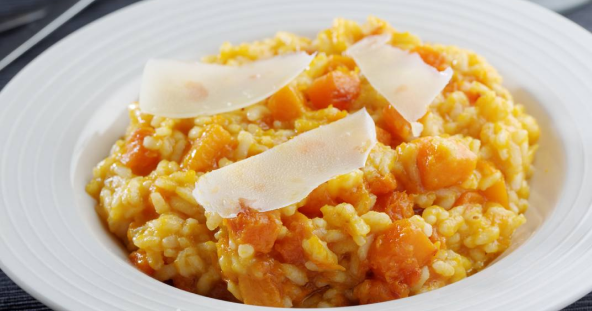

risoto de abobora
fácil serve 4 pessoas
ingredientes
1/2 kg de abóbora tipo kabotchá
2 colheres (sopa) de azeite
1 cebola média bem picada
1 dente de alho picado
3 colheres (sopa) de cebolinha verde picada
1/2 xícara (chá) de vinho banco seco
2 xícaras (chá) de arroz arbóreo
2 tabletes de caldo de galinha
1 colher (chá) de ervas finas
1 colher (café) de gengibre
1 folha de louro
2 colheres (sopa) de manteiga sem sal
50 g de queijo parmesão ralado
Salsinha picada a gosto
Pimenta a gosto
vídeo
modo de preparo
Descasque a abóbora e corte-a em cubinhos pequenos. Reserve. Coloque o azeite em uma panela funda e acrescente a cebola e o alho picados e leve ao fogo baixo até que a cebola e o alho murchem, mexendo sem parar. Adicione a cebolinha verde e a abóbora picada e deixe refogar por uns 3 minutos, mexendo sempre. Adicione o vinho branco e deixe cozinhar por uns 2 minutos. Adicione 2 xícaras de chá de água fervente e os tabletes de caldo de galinha e deixe cozinhar para que a abóbora fique ligeiramente macia, por uns 10 minutos em fogo baixo. Aumente o fogo e acrescente o arroz arbóreo. Mexa bem e deixe levantar fervura. Acrescente as ervas finas, o gengibre e a folha de louro. Diminua a chama do fogão e sempre mexendo vá acrescentando água fervente quanto necessário. Leva em média de 15 a 20 minutos para adquirir o ponto cremoso. Quanto estive al dente acrescente a manteiga e o queijo parmesão ralado. Experimente o sal e acrescente pimenta a gosto. Desligue o fogo e tampe a panela. Deixe descansar por uns 5 minutos. Sirva regado com queijo parmesão ralado e salsinha picada.